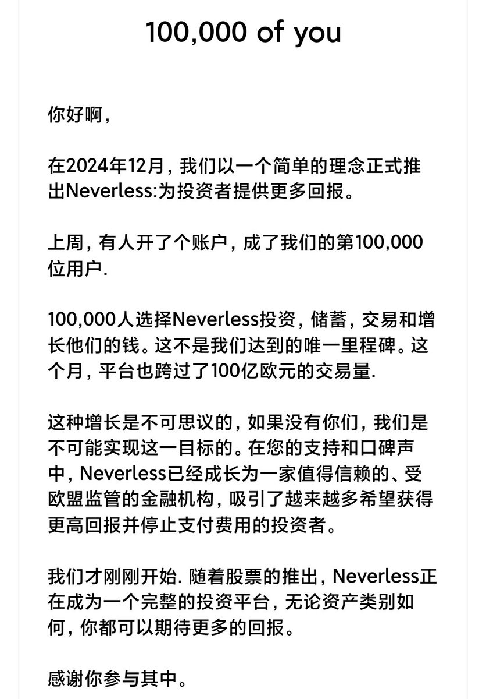
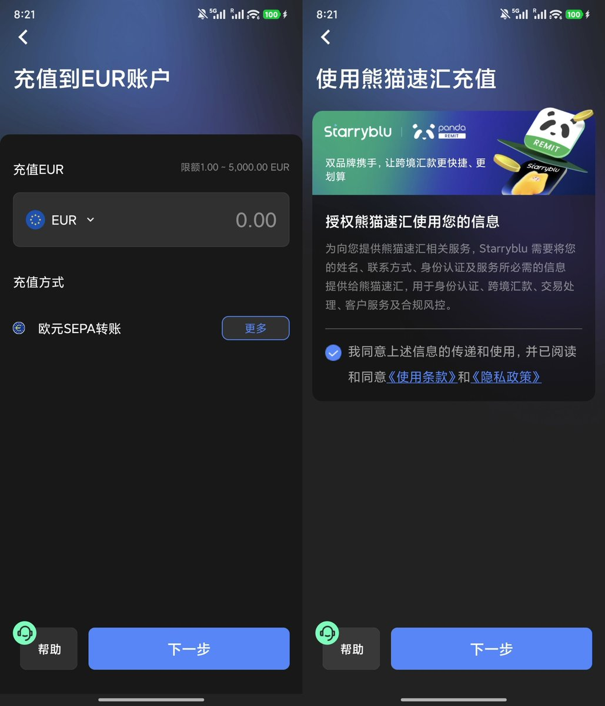
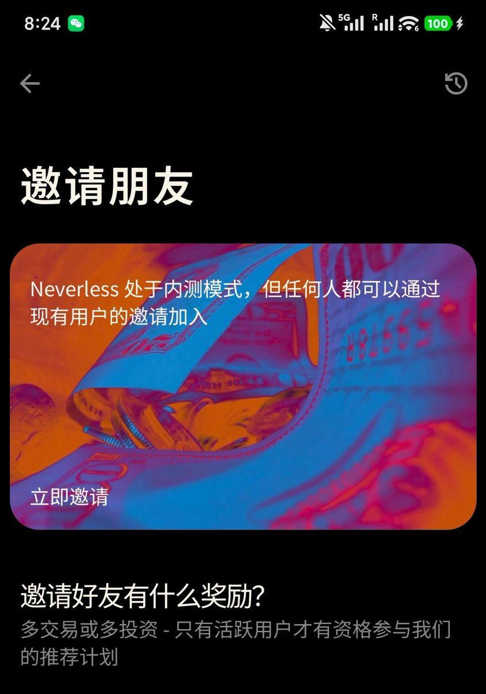

如果你朋友没有注册，也可以走我的invite链接注册Neverless：
https://t.co/tpcK5TMcMo
同时Starryblu开户仅需身份证+护照：
https://t.co/G19nQHpeGZ
感兴趣的推友可以试试！

同时Starryblu开户仅需身份证+护照：
https://t.co/G19nQHpeGZ
感兴趣的推友可以试试！



Neverless居然10万用户了，分享一个我在用的路径：
USDT->Neverless->Starryblu->消费
加密货币进Neverless后会转化为美元，再按中间行汇率转为欧元，通过SEPA汇到熊猫速汇Starryblu入金
最后就可以通过Starryblu提供的虚拟卡、微信支付消费，体验非常好！
不过Neverless内测需要邀请注册，附评论区 https://t.co/7aM8JwECMl
USDT->Neverless->Starryblu->消费
加密货币进Neverless后会转化为美元，再按中间行汇率转为欧元，通过SEPA汇到熊猫速汇Starryblu入金
最后就可以通过Starryblu提供的虚拟卡、微信支付消费，体验非常好！
不过Neverless内测需要邀请注册，附评论区 https://t.co/7aM8JwECMl